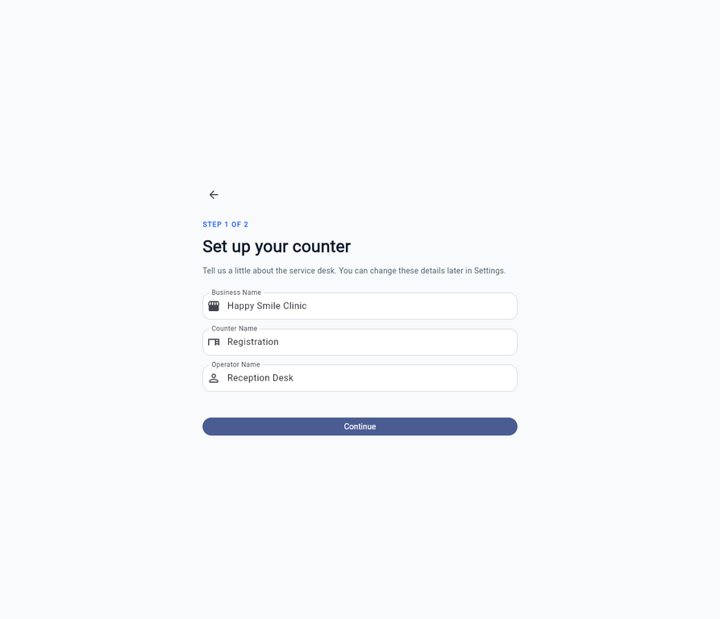
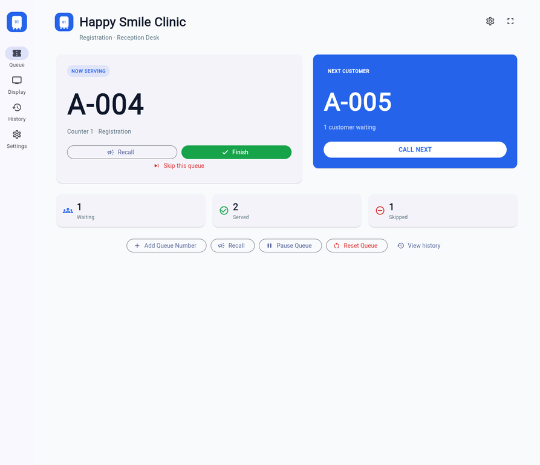
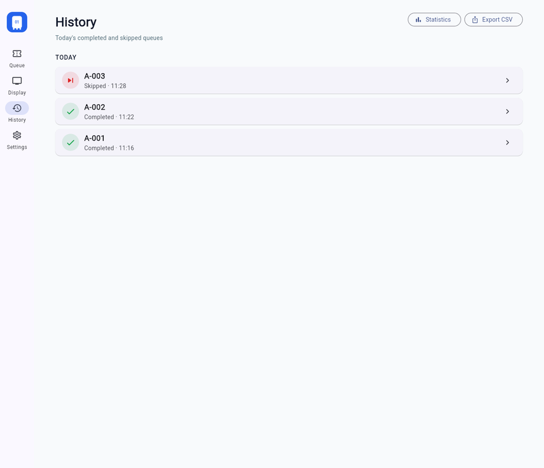
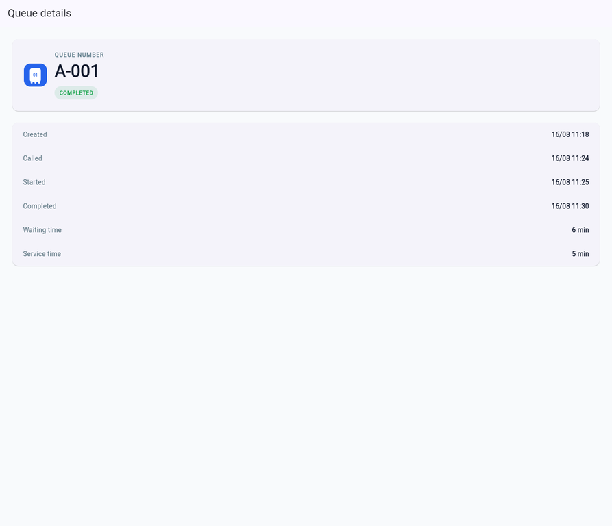
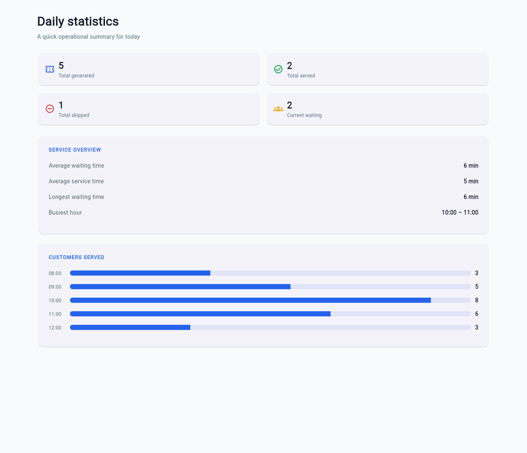

These images are generated from the final Flutter web build and stored locally with the documentation so the product can be reviewed without a backend or external website.
WelcomePurpose: introduce the app. Main actions: Get Started, View Demo. Workflow: first launch.

Business setupPurpose: configure business, counter, and operator. Main action: Continue. Workflow: onboarding step one.Queue operationPurpose: run the active line. Main actions: Add Queue Number, Call Next, Recall, Finish, Skip, Pause, Reset.Add queue numberPurpose: select ticket type and quantity. Main action: Generate Number. Workflow: ticket creation.

Serving statePurpose: show the current ticket. Main actions: Recall, Finish, Skip. Workflow: WAITING to SERVING.Digital displayPurpose: show a large customer-facing number. Main action: Exit display mode. Workflow: external display.

HistoryPurpose: review completed and skipped tickets. Main actions: open detail, Statistics, Export CSV.

Queue detailPurpose: inspect timestamps and durations. Main action: return. Workflow: history drill-down.

StatisticsPurpose: review daily performance. Main content: totals, duration metrics, hourly bars.SettingsPurpose: maintain business, queue, display, sound, and data preferences.